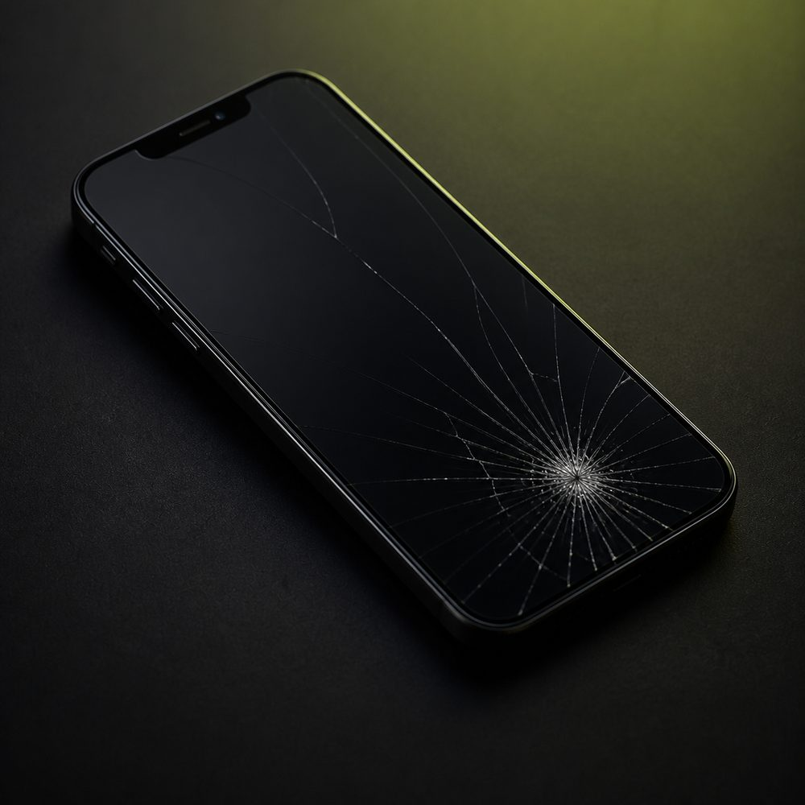
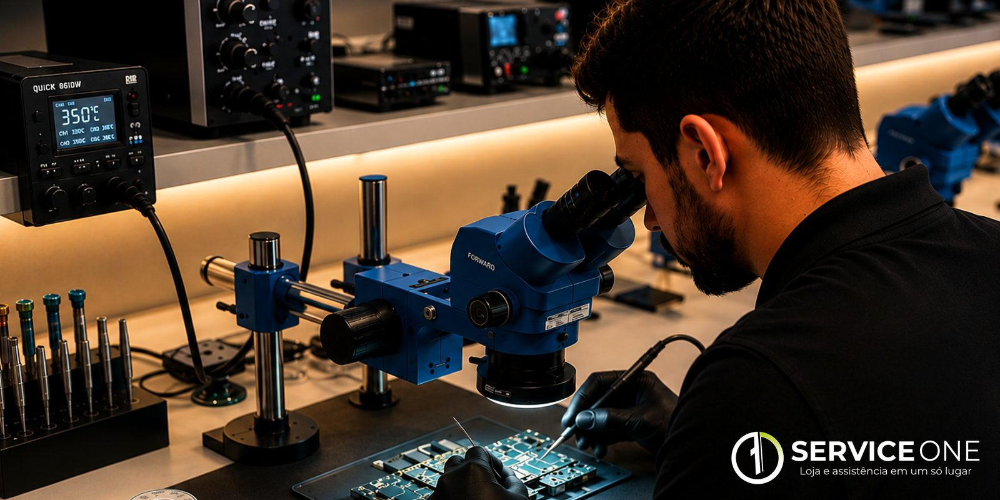
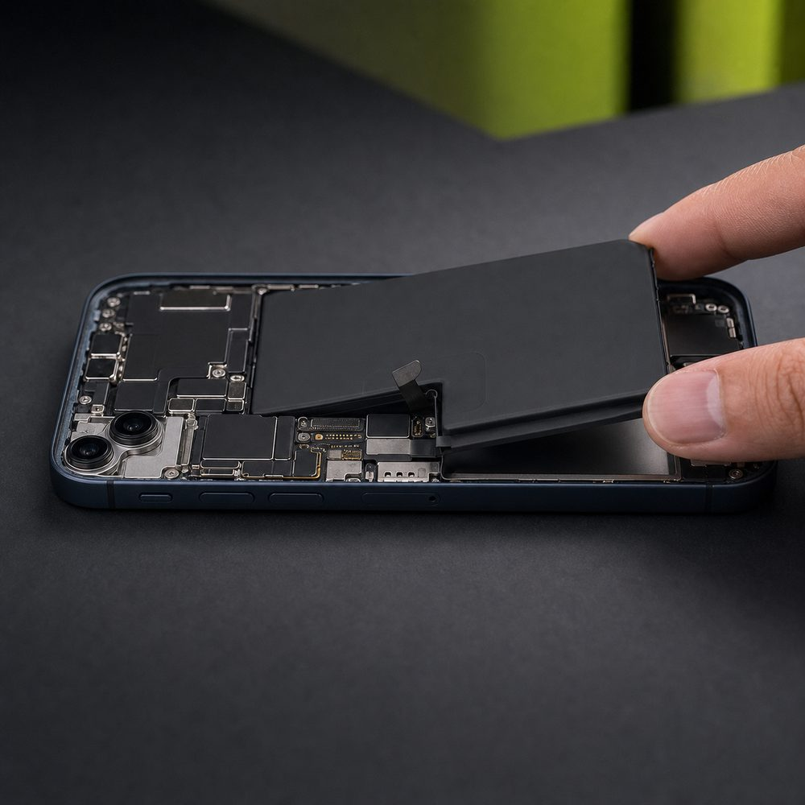
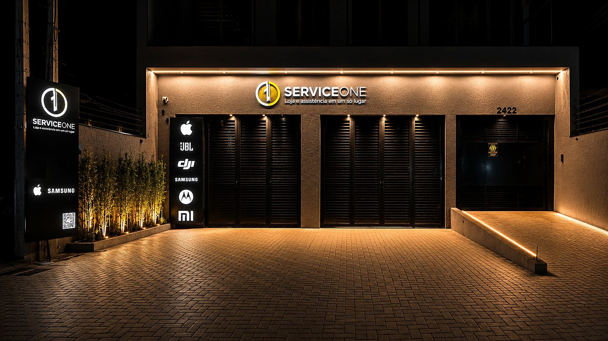

01

Tela
Volte a ver e tocar em tudo.
Para telas trincadas, sem imagem, com manchas, linhas ou falhas no toque.
Orçar troca de tela ↗Troca de tela e bateria com atendimento especializado, diagnóstico cuidadoso e a confiança de quem entende de tecnologia.

Conte o que aconteceu. A gente orienta você com clareza e encontra a solução adequada para o seu celular.

Para telas trincadas, sem imagem, com manchas, linhas ou falhas no toque.
Orçar troca de tela ↗
Para bateria descarregando rápido, desligamentos, aquecimento ou estufamento.
Orçar troca de bateria ↗Você explica o problema, nossa equipe avalia e orienta os próximos passos.
Envie a marca, o modelo e conte o que aconteceu com o aparelho.
Nossa equipe informa as opções e combina a avaliação na loja.
O aparelho passa por atendimento técnico cuidadoso e você acompanha a solução.

Se ainda ficou alguma dúvida, fale diretamente com a nossa equipe.
Conversar no WhatsApp ↗O valor depende da marca, do modelo e da peça indicada para o aparelho. Envie o modelo pelo WhatsApp e nossa equipe informa as opções disponíveis.
Desligamentos inesperados, pouca autonomia, aquecimento fora do normal e bateria estufada são sinais comuns. A confirmação é feita após uma avaliação técnica.
Cada caso é diferente. Toque falhando, manchas, linhas e ausência de imagem podem indicar danos ao conjunto. Nossa equipe avalia o aparelho e orienta a solução adequada.
Na Rua Joinville, 2422, bairro São Pedro, em São José dos Pinhais–PR. Atendemos de segunda a sexta, das 9h às 18h, e sábado, das 9h às 12h.
Envie o modelo do seu celular e peça seu orçamento agora.